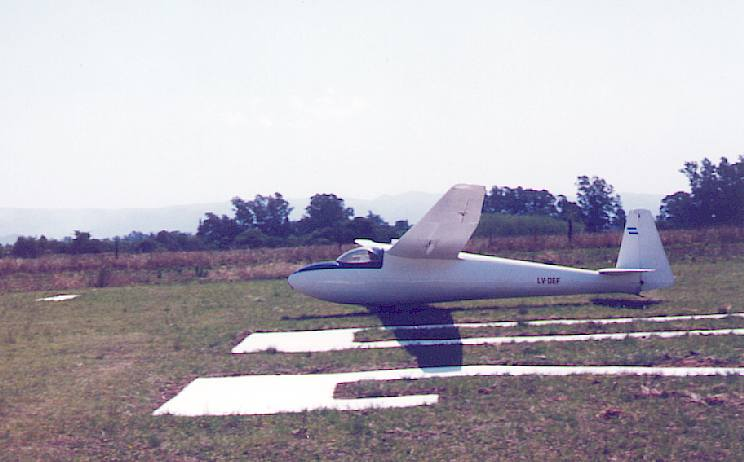

Esta información fue obtenida del Alex's Sailplane Directory:
Schleicher Ka-6 CR

Specifications
- Span 15.0 m./ 49.2 ft
- Area 12.45 sq. m. / 134 sq.ft.
- Aspect ratio 18.1
- Airfoil NACA 63-618/63-615
- Empty weight 190 kg. / 420 lb.
- Payload 114 kg. / 250 lb.
- Gross weight 304 kg. / 670 lb.
- Wing loading 24.41 kg. / sq. m. / 5.0 lb. /
sq. ft.
- Structure all-wood with some fabric cover
Performance
- L/D max. 31 80 kph / 43 kt / 50 mph
- Min. sink 0.61 m/s / 2.0 fps / 1.18 kt
- 68 kph / 36 kt / 42 mph
Other
- Country of origin Germany
- Designer Rudolf Kaiser
- No. of seats 1
- No. built 1,400
- No. in the U.S. over 50
The
series began with the 14 m. Ka 6. This was followed by the Standard Class (15 m.) Ka-6b,
with skid, and Ka6Br with main wheel. The Ka-6B won the OSTIV prize for the best Standard
Class design at the 1958 World Championships at Leszno, Poland. The –6c version was a
–6b with modified wing root. It has more of the wing covered with plywood and
incorporates other minor improvements, and also comes in skid and wheeled (-6cr) models.
All models have airbrakes for approach control. Some later –6CR models are designated
as Ka-6CRPE’s, the PE standing for pendulum elevators (the all-moving tail used on
the Ka-6E). Heinz Huth of Germany won in the Standard Class at the 1960 Koln-Butzwelerhof,
Germany and 1963 Junin, Argentina World Championships in Ka-6’s. In 1963 two
Ka-6’s were flown 876.0 km./ 544.3 miles by Karl Betzler and Otto Schauble from
Germany to France, setting a world distance record, and in 1964, Wally Scott of the U.S.
flew his Ka-6CR to a world goal of 837.7 km./ 520.55 miles. ATC